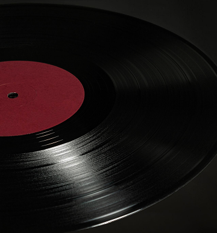
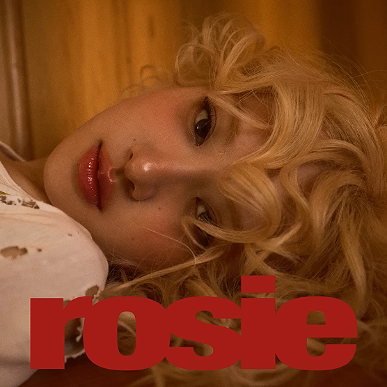

01 / K-POP · DREAMY MOOD
낯선 듯 익숙한 설렘의 K-POP
TRACKLIST / 03 SONGS
ROSÉ — toxic till the end
NewJeans — Supernatural
POW — Favorite
▶ 플레이리스트 듣기SIDE A / PERSONAL MUSIC ARCHIVE
CURATED MIX / VOL. 001
오늘은 이런 음악 어떤가요?
오늘의 선곡 보기VOL. 001 · 2026 / SEOUL
33⅓ RPM STEREO
PLAY / PAUSE YOUR DAY
🎧
오늘 하루와 어울리는 PLAYLIST를 기록해요!
01 / K-POP · DREAMY MOOD
TRACKLIST / 03 SONGS
ROSÉ — toxic till the end
NewJeans — Supernatural
POW — Favorite
▶ 플레이리스트 듣기02 / J-POP · LOVE & NOSTALGIA
TRACKLIST / 03 SONGS
Vaundy — 恋風邪にのせて
RADWIMPS — me me she
リュックと添い寝ごはん — 恋煩い
▶ 플레이리스트 듣기03 / POP · SOFT GROOVE
TRACKLIST / 03 SONGS
SZA — What Do I Do
Jackson Laird — Microdose
byjaye — Say So
▶ 플레이리스트 듣기
2026.11.12 / THU · 밤의 기록
오늘 하루 Playlist 끝에
소소한 음악 이야기를 기록해요.

2024년 발매된 정규 앨범 rosie 수록곡.
끝난 관계에 남은 감정을 솔직하게 표현한 노래.
차분하게 시작해 점점 선명해지는 보컬의 감정선
반복될수록 귀에 오래 남는 후렴의 멜로디
끝난 관계를 돌아보는 솔직한 가사의 여운
01 / AFTER DARK · CITY WALK
잠들지 않는 거리와 이어폰 속 작은 설렘
NIGHT WALK / CURATED MIX
02 / SLOW MOTION · TOKYO
익숙한 골목도 영화의 한 장면처럼
03 / 2AM · SOFT FOCUS
조용해진 시간, 마음만은 선명하게
AFTER HOURS / CURATED MIX
04 / RETRO · NEW JACK SWING
리듬을 타고 걷고 싶은 밤
05 / OLD FILM · VINTAGE
오래된 레코드에서 꺼낸 감성
VINTAGE / CURATED MIX